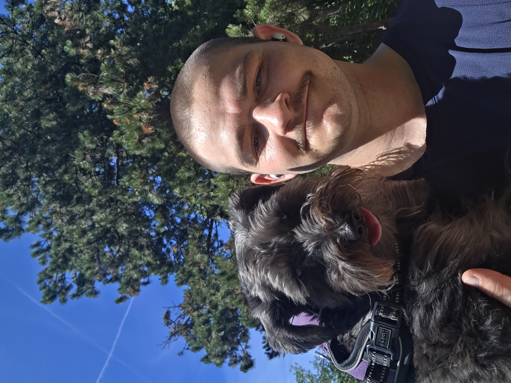

I was introduced to astronomy research through my undergraduate work at the University of Washington. My interests in research, telescopes, and satellites led me to Leiden University in the Netherlands, where I will complete a master's degree in Astronomy and Instrumentation in January 2027. Along the way my research has moved from exoplanet detection and characterization toward the instruments that make those measurements possible, and I have built Python analysis pipelines and gained hands-on experience with small-aperture optical systems, CMOS detector characterization, and precision exposure timing.
Prior to discovering my interest in instrumentation, I explored other topics. During and after my undergraduate coursework, I worked as a research assistant focused on the detectability of exomoons, using an existing light-curve model of a transiting planet–moon system and computing the Fisher information matrix, analytically and numerically, to quantify how well each orbital parameter could be recovered. I found the research question fascinating: given a measurement, what information can actually be recovered, and what stays buried in the noise? The project taught me to treat the noise floor as a design constraint rather than a limitation to be tolerated, since what can be recovered is set by how strongly the signal responds to a given parameter relative to the uncertainty in the data.
My first research project at Leiden focused on atmospheric modeling and posed a fundamentally different question, one not associated with measurement noise. I investigated how stellar mass, stellar rotation rate, and planetary mass jointly govern the survival of a terrestrial exoplanet's primordial hydrogen–helium envelope against XUV-driven hydrodynamic escape, and explored the factors related to the stability of a habitable zone and the potential for a life-sustaining secondary atmosphere to develop. The work required reading primary literature to inform the development of Python code modeling atmospheric evolution. It also sparked my curiosity about how one could actually observe and characterize these planets — which led me to declare a focus in the instrumentation track.
The instrumentation coursework sharpened that broad enthusiasm into a specific pursuit: detector trade studies for the Habitable Worlds Observatory, predictive wavefront control, and coronagraphy from Fourier optics through differential imaging on real instrument data. In tandem, my second research project applied those principles to the optical detectability of low Earth orbit satellites, building a first-principles photon-counting noise budget for a small-aperture optical ground station. Both are documented in the portfolio, with code and walkthroughs.
With the increasing complexity of these projects, I have gained confidence in my ability to pivot and adapt a methodology. In the LEO work I had planned to anchor the system throughput with an empirical on-sky calibration, but the observing logs did not record the configuration behind each frame and the setup changed frequently enough that no single configuration accumulated enough data to calibrate against. I revised the approach, normalized to a literature-anchored throughput, and propagated the resulting uncertainty through to the detection limits. Alongside the research I tutor high school and undergraduate students in calculus, physics, and standardized tests — sharpening my ability to explain a method tests and improves my own understanding of it.
Coursework, research, and thesis projects. Each entry includes a short video walkthrough and a downloadable archive of the associated code and notebooks.